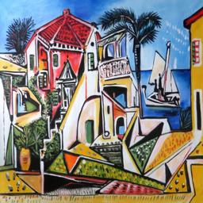

from fastai.vision.all import *Deploy Deep Learning Model
Deep Learning
Hugging Face
fastai
Model Deployment
In the previous post, we saw how to train a model (to classify Picasso and Monet paintings) and save the trained model in fastai. In this post, let us create an app using gradio that uses the trained model and we will also learn how to deploy the app using Hugging Face Spaces so that others can use our app. Incase if you are not familiar with training and saving a model, I suggest you to go through Picasso and Monet Painting Classifier post.
Install Libraries
Let’s start by installing necessary Python packages.
pip install -Uqq fastai
pip install -Uqq gradio- 1
-
Installs
fastai. It provides functions to load the model trained usingfastai. - 2
-
Installs
gradio. It is a library used to build web interfaces using Python.
Predict using trained model
Let us now load the trained model and make predictions on sample images.
Import packages
To load the model, we need to import necessary modules from fastai. fastai.vision.all module provides functions related to computer vision tasks.
Load the model
learn = load_learner('model.pkl')- 1
-
Loads the trained model saved as
model.pklfile.
NotImplementedError: cannot instantiate 'PosixPath' on your systemUnfortunately when you load the model in a Windows system, it throws above error. Because in my case, I trained and saved the model in a Linux system and trying to load it in Windows. To get rid of this error, below code should be run before loading the model.
import platform
if platform.system() == 'Windows':
import pathlib
pathlib.PosixPath = pathlib.WindowsPath- 1
-
Checks if the OS where the code is run is
Windows?
learn = load_learner('model.pkl')Now the model is loaded successfully 🙂! Before making the predictions, let’s see the possible predictions (labels) of the model.
labels = learn.dls.vocab
labels- 1
-
dlsrefers toDataLoadersandvocabrefers to the class labels.
['monet painting', 'picasso painting']Given an image as input our model will predict either monet painting or picasso painting.
Predict
Let’s read an image and make prediction with the loaded model.
img = PILImage.create('images/picas3.jpg')
img.to_thumb(256)- 1
-
Read the image from the path
images/picas3.jpg. - 2
- Resize the image to a thumbnail of size 256.

Now pass the loaded image to the model’s predict method which returns the class label.
pred_label, pred_index, class_probs = learn.predict(img)
print("Prediction:", pred_label)
print("Class probabilities:", class_probs)
print("Prediction Index:", pred_index)
0.00% [0/1 00:00<?]
Prediction: picasso painting
Class probabilities: tensor([0.0028, 0.9972])
Prediction Index: tensor(1)We could see the model predicting it’s a Picasso’s painting and it is 99% confident about it. We can use the prediction index in the class probabilities array to get the probability (confidence) score of the predicted label.
Let’s wrap the above logic to a function which gets image path as input and returns a dictionary with class label and confidence score as output.
def predict(img_path):
img = PILImage.create(img_path)
pred_label, pred_index, class_probs = learn.predict(img)
output = {labels[i]:float(class_probs[i]) for i in range(len(labels))}
return output- 1
-
Read image in the
img_path. - 2
- Make predictions for the image.
- 3
-
Create output dictionary where key is the class label and value is the probability score. The output is specifically constructed like this because
gradioexpects the labels to be in this format. We’ll discuss aboutgradioin the next section.
Now let’s use the predict function to make predictions for few images.
predict('images/picas1.jpg')
0.00% [0/1 00:00<?]
{'monet painting': 1.7153462977148592e-05,
'picasso painting': 0.9999828338623047}predict('images/mon2.jpg'){'monet painting': 0.999991774559021,
'picasso painting': 8.193430403480306e-06}Now we successfully loaded the trained model and made predictions, let’s develop an app and use this model in it.
Create Web Interface using Gradio
We can create an application using any web (or app) frameworks and use our model in it. Since we are already familiar with Python, we can use Python libraries to create User Interfaces quickly with no app development background. There are few popular packages to do it like Streamlit and Gradio. In this post, we will see how to develop an app using Gradio with very few lines of code.
Let’s start by importing gradio.
import gradio as grGradio provides a high-level abstraction (gr.Interface) that allows us to quickly create a demo for any Python function (we have predict function!) simply by specificying the input types and output types.
demo = gr.Interface(
inputs=gr.Image(height=400),
outputs=gr.Label(),
fn=predict,
)We see that the Interface class is initialized with three required parameters:
fn: the function to wrap a user interface (UI) aroundinputs: which Gradio component(s) to use for the input. The number of components should match the number of arguments in your function.outputs: which Gradio component(s) to use for the output. The number of components should match the number of return values from your function.
To run the app, call launch method. It runs the app and by default serves at http://127.0.0.1:7860. Open this URL in your browser to see the app.
demo.launch()In Jupyter notebook, we can close the running app using close method.
demo.close()Closing server running on port: 7860Let’s add title and description to our app by setting the title and description parameters.
title = "Painting Classifier"
description = "A painting classifier trained to classify Picasso and Monet paintings using dataset scrapped from Duck Duck Go Image search."
demo = gr.Interface(
inputs=gr.Image(height=400),
outputs=gr.Label(),
fn=predict,
title=title,
description=description,
)demo.launch()Our app is almost ready. Now user can drop an image in the input widget or click to upload an image. Once the image is uploaded, clicking the ‘Submit’ button will call the predict function and returns the output and is displayed. Let’s see it in action.
demo.close()Closing server running on port: 7860The app is ready now. It may be bit confusing for new users what kind of input they should be using. Wouldn’t it be good if we add few examples inputs to the app? Luckily, gradio supports it out of the box with just a parameter. Let’s add examples to the app using examples parameter which takes a list of image paths.
demo = gr.Interface(
inputs=gr.Image(height=400),
outputs=gr.Label(),
fn=predict,
title=title,
description=description,
examples=['images/picas3.jpg', 'images/picas1.jpg'],
)demo.launch()You can see a new section Examples below the Clear and Submit buttons. User can click this to use as inputs.
demo.close()Closing server running on port: 7860Deploy the app
We have created the app and accessed it locally in the browser. Wouldn’t it be good if we deploy it and share with others to use? Without any server setup, Hugging Face Spaces help us to achieve it through simple steps for free!
Before following further, create a Hugging Face account
Hugging Face Spaces
Let’s create a space for our gradio app. Once you log into your Hugging Face account, go to Hugging Face Spaces and click Create new space.
You will be landed to a form where we will be giving basic details like the space name, license, app framework, what kind of server configs we need etc., Hugging Face provides variety of hardware like CPUs and GPUs. For our demo, we will choose the free CPU.
Once you click Create Space, Hugging Face will create a git repo for you which we need to clone locally and update them with trained model and python scripts. Then the updated local repo should be pushed to Hugging Face remote repo.
Let’s clone the repo as per the instruction given.
git clone https://huggingface.co/spaces/harishb00/painting-classifierConvert Jupyter code to python script
Convert all the code we written in Jupyter notebook to Python script and save it to app.py file in the cloned repo. Once we do it, it looks like below
app.py
import platform
from fastai.vision.all import *
import gradio as gr
if platform.system() == 'Windows':
import pathlib
pathlib.PosixPath = pathlib.WindowsPath
learn = load_learner('model.pkl')
labels = learn.dls.vocab
def predict(img):
img = PILImage.create(img)
pred,pred_idx,probs = learn.predict(img)
return {labels[i]: float(probs[i]) for i in range(len(labels))}
title = "Painting Classifier"
description = "A painting classifier trained to classify Picasso and Monet paintings using dataset scrapped from Duck Duck Go Image search."
demo = gr.Interface(
inputs=gr.Image(height=400),
outputs=gr.Label(),
fn=predict,
title=title,
description=description,
examples=['images/picas3.jpg', 'images/picas1.jpg'],
)
demo.launch()Also create a requirements file inside cloned repo with Python packages required to run the script.
requirements.txt
fastai
gradioCopy the model file and image example files to the same folder. Once you are done with all the steps, your folder structure looks like this.
Commit and Push
It’s time to commit and push the code to Hugging Face Spaces. Execute below commands in your terminal.
git add .
git commit -m "app commit"
git pushgit push hangs
git push hangs at 74% for me since the uploaded model file is a large one. git config --global http.postBuffer 157286400 fixed the issue by increasing the git buffer.
That’s it. In few minutes, your app is live and you can visit the Hugging Face Spaces project URL (URL used with git clone URL) to use/share your app.